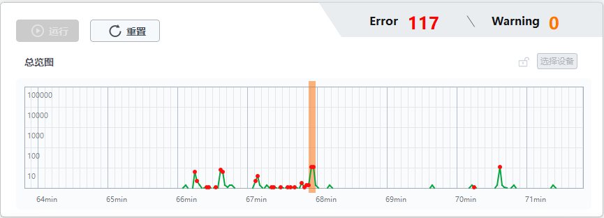

事件总览
事件总览可对采集卡/相机的事件根据时间推移进行实时统计，单位为“分钟（min）”。
连接设备后，单击界面的运行，如下图所示。总览图中横轴为“时间”，纵轴为“数量”；总览图显示界面中的绿色表示“正常事件”，红色表示“异常事件”，橙色表示“警告事件”；界面上方实时更新“异常（Error）数”和“警告（Warning）数”。
说明
-
单击暂停，可停止当前运行操作。
-
单击重置，可保留用户配置，清空数据信息重新运行。
单击总览图处任意时间点，可将该时间点后的“6秒钟”以橙色竖条块进行显示，您可对该“6秒钟”时间区域内的事件进行诊断解析。按住鼠标右键，左右拖动鼠标可查看前后时间段的事件情况，如何诊断具体请见事件诊断章节。

图 1 事件总览若需要更换设备，单击选择设备，重新选择设备即可。
若不需要实时显示更新的数据，单击 ，更新的数据界面将不显示；单击
，更新的数据界面将不显示；单击 ，则缓存的数据继续显示。
，则缓存的数据继续显示。
说明
暂停操作时，设备将不会获取数据。
常见的非正常事件举例如下：
-
异常（Error）:缓存异常、相机掉线错误、DDR初始化失败等，详细内容可见工业采集卡SDK用户手册的结构体定义章节；
-
警告（Warning）:采集卡/相机获取不到参数等。